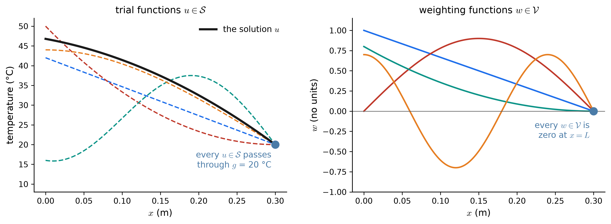
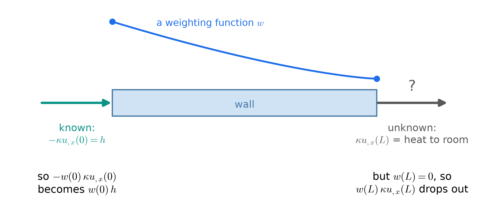
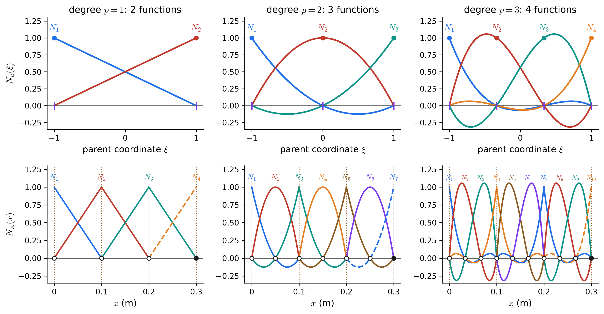
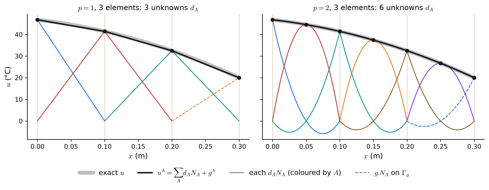
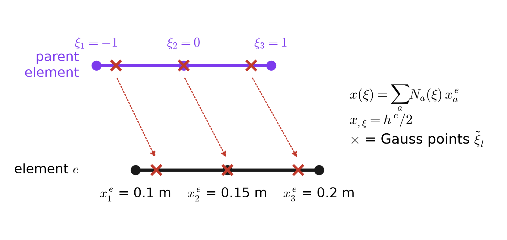
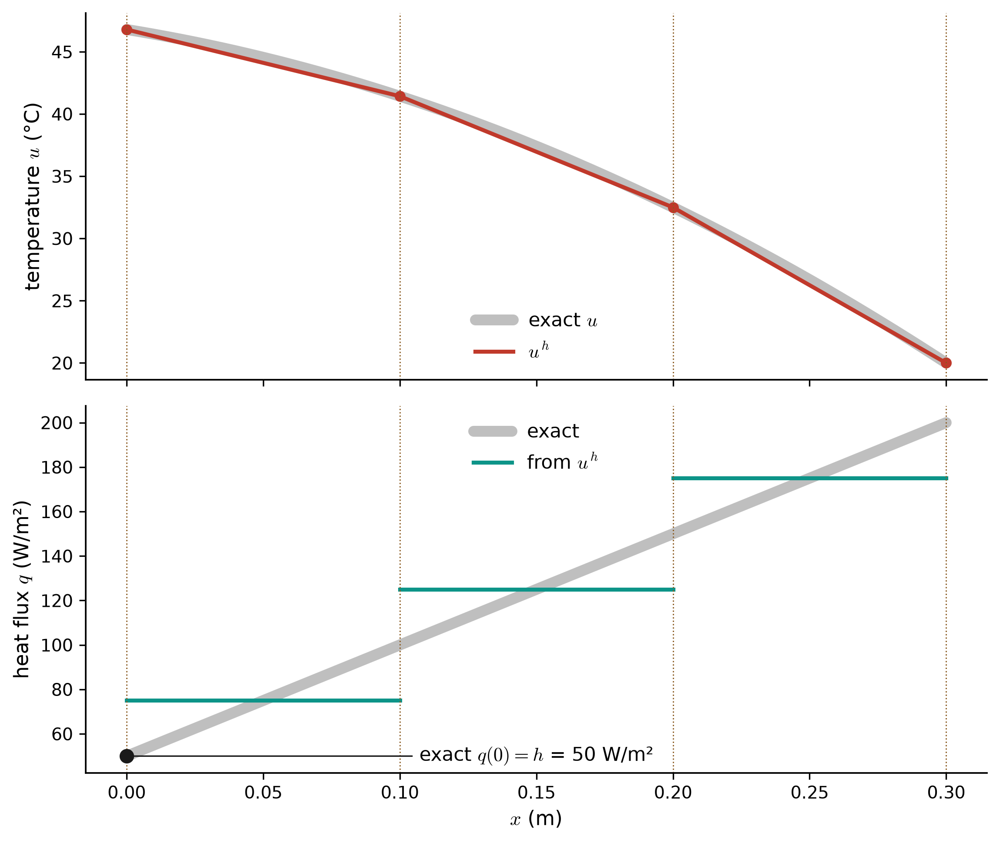
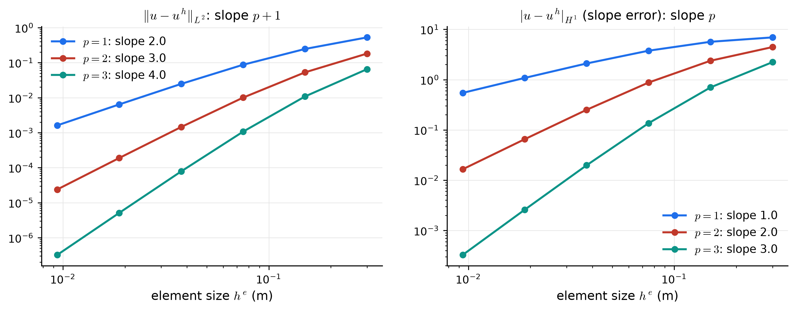

Appendix C — 1D Poisson II: The Wall, by Galerkin’s Method
The strong-form page set up heat conduction through a concrete wall as Hughes’ model problem. This page solves it approximately, following Hughes, Chapter 1, step by step:
\[ (\mathrm{S}) \;\Longleftrightarrow\; (\mathrm{W}) \;\xrightarrow{\;\text{finite-dimensional}\;}\; (\mathrm{G}) \;\xrightarrow{\;\text{basis functions}\;}\; \mathbf{K}\mathbf{d} = \mathbf{F} \;\xleftarrow{\;\text{assembly}\;}\; \mathbf{k}^e,\; \mathbf{f}^e \;\xrightarrow{\;\text{solve}\;}\; u^h \]
The running example throughout is the one from before, in Hughes’ arrangement (a):
\[ (\mathrm{S}) \qquad \left(\kappa\,u_{,x}\right)_{,x} + f = 0 \;\text{ on } ]0, L[ \qquad u(L) = g \qquad -\kappa\,u_{,x}(0) = h \] \[ L = 0.30\ \text{m},\quad \kappa = 1.4\ \text{W/(m·K)},\quad f = 500\ \text{W/m}^3,\quad h = 50\ \text{W/m}^2,\quad g = 20\ {}^\circ\text{C} \]
At the bottom of the page there is an explorer where you choose the element degree, the number and spacing of the elements, and the data, and see the matrices, the approximation, and its error update together.
C.1 The weak form
C.1.1 Two collections of functions
The weak form looks for \(u\) among trial functions and tests it against weighting (test) functions. The two collections differ only at the Dirichlet end:
\[ \mathcal{S} = \left\{\, u \;\middle|\; u \in H^1(\Omega),\; u(L) = g \,\right\} \qquad\qquad \mathcal{V} = \left\{\, w \;\middle|\; w \in H^1(\Omega),\; w(L) = 0 \,\right\} \]

- \(H^1(\Omega)\) asks only that \(u\) and \(u_{,x}\) be square-integrable. In one dimension that means continuous, with a slope that may jump — exactly what a chain of polynomial pieces looks like. The strong form needed \(u_{,xx}\) everywhere; the weak form will need only \(u_{,x}\).
- The Dirichlet condition is built into \(\mathcal{S}\): every trial function already satisfies it. That is what “essential” meant on the strong-form page.
C.1.2 Multiply, integrate, and integrate by parts
Take the differential equation, multiply it by any \(w \in \mathcal{V}\), and integrate through the wall:
\[ 0 = \int_0^L w\left[\left(\kappa\,u_{,x}\right)_{,x} + f\right] dx \qquad \text{for every } w \in \mathcal{V} \]
The product rule, \(\left(w\,\kappa u_{,x}\right)_{,x} = w_{,x}\,\kappa u_{,x} + w\left(\kappa u_{,x}\right)_{,x}\), moves one derivative off \(u\) and onto \(w\):
\[ \int_0^L w_{,x}\,\kappa\,u_{,x}\,dx = \int_0^L w f\,dx + \Big[\, w\,\kappa\,u_{,x} \,\Big]_{x=0}^{x=L} = \int_0^L w f\,dx + w(L)\,\kappa u_{,x}(L) - w(0)\,\kappa u_{,x}(0) \]

With \(-\kappa u_{,x}(0) = h\) and \(w(L) = 0\), what remains is the weak form.
\[ (\mathrm{W}) \qquad \begin{aligned} &\text{Given } f,\ g,\ h,\ \kappa, \text{ find } u \in \mathcal{S} \text{ such that for all } w \in \mathcal{V}: \\[3pt] &\qquad \underbrace{\int_0^L w_{,x}\,\kappa\,u_{,x}\,dx}_{a(w,\,u)} = \underbrace{\int_0^L w\,f\,dx}_{(w,\,f)} + w(0)\,h \end{aligned} \]
Hughes names the two integrals: the bilinear form \(a(w, u)\) and the \(L^2\) inner product \((w, f)\), so that \((\mathrm{W})\) reads compactly as
\[ a(w, u) = (w, f) + w(0)\,h \qquad \forall\, w \in \mathcal{V} \]
The Neumann term follows the Neumann end. For each arrangement on the strong-form page:
| Arrangement | \(\mathcal{S}\) | \(\mathcal{V}\) | Right-hand side |
|---|---|---|---|
| (a) Hughes: \(h\) at \(x=0\), \(g\) at \(x=L\) | \(u(L) = g\) | \(w(L) = 0\) | \((w, f) + w(0)\,h\) |
| (b) \(g\) at \(x=0\), \(h\) at \(x=L\) | \(u(0) = g\) | \(w(0) = 0\) | \((w, f) + w(L)\,h\) |
| (c) \(g\) at both ends | \(u(0) = g_0\), \(u(L) = g\) | \(w(0) = w(L) = 0\) | \((w, f)\) |
- Units. Every term of \((\mathrm{W})\) is W/m² times the units of \(w\). With a dimensionless \(w\), it is a weighted heat balance per square metre of wall.
- Meaning. \((\mathrm{W})\) is the energy balance averaged with weight \(w\). One weight checks the balance “on average”; every weight in \(\mathcal{V}\) pins it down at every point. That is the equivalence \((\mathrm{S}) \Leftrightarrow (\mathrm{W})\) proved in Classes 4 and 5.
- Only one derivative. \(u_{,x}\) and \(w_{,x}\) appear; \(u_{,xx}\) does not. A temperature profile with a kink — two concrete mixes with different \(\kappa\) — is now admissible.
C.2 The Galerkin form
\((\mathrm{W})\) still asks for a whole function. Galerkin’s method replaces \(\mathcal{S}\) and \(\mathcal{V}\) by finite-dimensional collections \(\mathcal{S}^h \subset \mathcal{S}\) and \(\mathcal{V}^h \subset \mathcal{V}\), built from a small number of basis functions, so that finding \(u^h\) means finding a list of numbers.
C.2.1 Elements, nodes, and Lagrange basis functions
Cut \([0, L]\) into \(n_{el}\) elements \(\Omega^e = [x^e_1, x^e_{n_{en}}]\) of length \(h^e\). On each element, use Lagrange polynomials of degree \(p\), which need \(n_{en} = p + 1\) element nodes, equally spaced. Neighbouring elements share their end nodes, so the mesh has
\[ n_{np} = p\,n_{el} + 1 \quad \text{nodes}, \qquad x_1 = 0 < x_2 < \cdots < x_{n_{np}} = L \]
Each element is a copy of one parent element, \(\xi \in [-1, 1]\), with nodes \(\xi_a = -1 + 2(a-1)/p\). The Lagrange function for node \(a\) is one there and zero at the other nodes:
\[ N_a(\xi) = \prod_{b \ne a} \frac{\xi - \xi_b}{\xi_a - \xi_b} \qquad\Longrightarrow\qquad N_a(\xi_b) = \delta_{ab} \] \[ p = 1:\;\; N_1 = \tfrac12(1 - \xi),\;\; N_2 = \tfrac12(1 + \xi) \qquad\quad p = 2:\;\; N_1 = \tfrac12\xi(\xi - 1),\;\; N_2 = 1 - \xi^2,\;\; N_3 = \tfrac12\xi(\xi + 1) \] \[ p = 3:\;\; N_{1,4} = \tfrac{1}{16}(1 \mp \xi)(9\xi^2 - 1),\qquad N_{2,3} = \tfrac{9}{16}(1 - \xi^2)(1 \mp 3\xi) \]

C.2.2 The Galerkin form, \((\mathrm{G})\)
With Hughes’ numbering, node \(n_{np}\) is on \(\Gamma_g\) and the other \(n = n_{np} - 1\) nodes carry unknowns. Build the approximations from the basis:
\[ w^h = \sum_{A=1}^{n} c_A\,N_A \;\in \mathcal{V}^h \qquad\qquad u^h = v^h + g^h,\qquad v^h = \sum_{B=1}^{n} d_B\,N_B \;\in \mathcal{V}^h,\qquad g^h = g\,N_{n+1} \]
\(g^h\) takes care of the Dirichlet value (\(g^h(L) = g\), because \(N_{n+1}(L) = 1\)), and \(v^h\) vanishes at \(L\) like every member of \(\mathcal{V}^h\). So \(u^h \in \mathcal{S}^h\) automatically. Substituting \(u^h\) and \(w^h\) into \((\mathrm{W})\), and moving the known part \(g^h\) to the right, gives
\[ (\mathrm{G}) \qquad a(w^h, v^h) = (w^h, f) + w^h(0)\,h - a(w^h, g^h) \qquad \forall\, w^h \in \mathcal{V}^h \]

C.3 From \((\mathrm{G})\) to \(\mathbf{K}\mathbf{d} = \mathbf{F}\)
Put the expansions into \((\mathrm{G})\). Because \(a(\cdot,\cdot)\) and \((\cdot,\cdot)\) are linear in each slot, the sums and constants come straight out:
\[ \sum_{A=1}^{n} c_A \left[\, \sum_{B=1}^{n} a(N_A, N_B)\,d_B - (N_A, f) - N_A(0)\,h + a(N_A, N_{n+1})\,g \right] = 0 \]
This must hold for every \(w^h\), that is, for every choice of the \(c_A\). Choose \(c_A = 1\) for one \(A\) and zero for the rest: the bracket for that \(A\) must vanish. So there is one equation per unknown:
\[ \sum_{B=1}^{n} \underbrace{a(N_A, N_B)}_{K_{AB}}\;d_B = \underbrace{(N_A, f) + N_A(0)\,h - a(N_A, N_{n+1})\,g}_{F_A}, \qquad A = 1, \dots, n \] \[ \boxed{\;\mathbf{K}\,\mathbf{d} = \mathbf{F}\;} \qquad K_{AB} = \int_0^L N_{A,x}\,\kappa\,N_{B,x}\,dx \qquad F_A = \int_0^L N_A\,f\,dx + \delta_{A1}\,h - \int_0^L N_{A,x}\,\kappa\,N_{n+1,x}\,dx\;g \]
- \(\mathbf{K}\) is the conductivity (stiffness) matrix, W/(m²·K); \(\mathbf{d}\) holds the unknown nodal temperatures, °C; \(\mathbf{F}\) is the heat-flux vector, W/m².
- \(N_A(0) = \delta_{A1}\): only node 1 sits at \(x = 0\), so \(h\) enters only \(F_1\).
- Symmetric, since \(a(N_A, N_B) = a(N_B, N_A)\).
- Banded. \(K_{AB} = 0\) unless \(N_A\) and \(N_B\) are both non-zero on some element (Figure C.6).
- Positive definite, because \(\kappa > 0\) and \(\Gamma_g\) is not empty. With two Neumann ends, arrangement (d), the constant function makes \(\mathbf{K}\mathbf{d} = 0\), so \(\mathbf{K}\) is singular: the non-uniqueness of the strong form, in matrix form.
C.4 The element point of view
Every integral over \([0, L]\) is a sum of integrals over elements, and on element \(e\) only its own \(n_{en}\) functions are non-zero. So all the work reduces to small element arrays, in local numbering \(a, b = 1, \dots, n_{en}\):
\[ k^e_{ab} = \int_{\Omega^e} N_{a,x}\,\kappa\,N_{b,x}\,dx \qquad\qquad f^e_a = \underbrace{\int_{\Omega^e} N_a\,f\,dx}_{\text{body}} + \underbrace{\delta_{e1}\,\delta_{a1}\,h}_{\text{Neumann end}} - \underbrace{\sum_{b} k^e_{ab}\,g^e_b}_{\text{Dirichlet end}} \]
where \(g^e_b\) is \(g\) if local node \(b\) is the Dirichlet node and zero otherwise.
C.4.1 The parent element, the Jacobian, and quadrature

\[ x(\xi) = \sum_{a=1}^{n_{en}} N_a(\xi)\,x^e_a, \qquad x_{,\xi} = \frac{h^e}{2}, \qquad N_{a,x} = N_{a,\xi}\,\xi_{,x} = N_{a,\xi}\,\frac{2}{h^e} \] \[ k^e_{ab} = \int_{-1}^{1} N_{a,\xi}\,\kappa\,N_{b,\xi}\,\left(x_{,\xi}\right)^{-1} d\xi \approx \sum_{l=1}^{n_{int}} N_{a,\xi}(\tilde\xi_l)\,\kappa\,N_{b,\xi}(\tilde\xi_l)\, \frac{2}{h^e}\,W_l \qquad f^e_a \approx \sum_{l=1}^{n_{int}} N_a(\tilde\xi_l)\,f\big(x(\tilde\xi_l)\big)\,\frac{h^e}{2}\,W_l \]
An \(n_{int}\)-point Gauss rule is exact for polynomials up to degree \(2n_{int} - 1\). The stiffness integrand has degree \(2p - 2\), so \(n_{int} = p\) points already integrate it exactly. The code here uses \(p + 3\), so that non-polynomial \(f\) is integrated accurately as well.
For constant \(\kappa\) and \(f\), the integrals come out in closed form:
\[ p = 1:\quad \mathbf{k}^e = \frac{\kappa}{h^e}\begin{bmatrix} 1 & -1 \\ -1 & 1 \end{bmatrix}, \qquad \mathbf{f}^e_{\text{body}} = \frac{f\,h^e}{2}\begin{Bmatrix} 1 \\ 1 \end{Bmatrix} \] \[ p = 2:\quad \mathbf{k}^e = \frac{\kappa}{3h^e}\begin{bmatrix} 7 & -8 & 1 \\ -8 & 16 & -8 \\ 1 & -8 & 7 \end{bmatrix}, \qquad \mathbf{f}^e_{\text{body}} = \frac{f\,h^e}{6}\begin{Bmatrix} 1 \\ 4 \\ 1 \end{Bmatrix} \] \[ p = 3:\quad \mathbf{k}^e = \frac{\kappa}{40h^e}\begin{bmatrix} 148 & -189 & 54 & -13 \\ -189 & 432 & -297 & 54 \\ 54 & -297 & 432 & -189 \\ -13 & 54 & -189 & 148 \end{bmatrix}, \qquad \mathbf{f}^e_{\text{body}} = \frac{f\,h^e}{8}\begin{Bmatrix} 1 \\ 3 \\ 3 \\ 1 \end{Bmatrix} \]
- Every row of \(\mathbf{k}^e\) sums to zero: a uniform temperature carries no heat.
- The entries of \(\mathbf{f}^e_{\text{body}}\) add up to \(f\,h^e\), the heat made in the element. It is split among the nodes by how much of the element each basis function “covers” (Simpson’s weights 1, 4, 1 for \(p = 2\)).
C.4.2 Assembly: the ID, IEN, and LM arrays
Hughes keeps the bookkeeping in three integer arrays:
| Array | Maps | Meaning |
|---|---|---|
| \(\mathrm{ID}(A)\) | global node \(\to\) equation | \(P\) if node \(A\) is unknown number \(P\); \(0\) if \(A\) is on \(\Gamma_g\) |
| \(\mathrm{IEN}(a, e)\) | local node, element \(\to\) global node | local node \(a\) of element \(e\) is global node \(A\) |
| \(\mathrm{LM}(a, e)\) | local node, element \(\to\) equation | \(\mathrm{LM}(a,e) = \mathrm{ID}\big(\mathrm{IEN}(a,e)\big)\) |
Assembly adds \(k^e_{ab}\) into \(K_{PQ}\) with \(P = \mathrm{LM}(a,e)\) and \(Q = \mathrm{LM}(b,e)\), and \(f^e_a\) into \(F_P\), skipping any zero (Dirichlet) index. Hughes writes the whole loop as
\[ \mathbf{K} = \mathop{\Large\mathsf{A}}_{e=1}^{n_{el}}\left(\mathbf{k}^e\right), \qquad \mathbf{F} = \mathop{\Large\mathsf{A}}_{e=1}^{n_{el}}\left(\mathbf{f}^e\right) \]

NoteHughes’ notation and the class notation
| Hughes (this appendix) | Class notes | |
|---|---|---|
| nodes \(A = 1, \dots, n_{np}\); local \(a = 1, \dots, n_{en}\) | \(A = 0, \dots, n_{bf}-1\); \(a = 0, \dots\) | 1-based vs 0-based (code) counting |
| \(\mathbf{k}^e = [k^e_{ab}]\), \(\mathbf{f}^e = \{f^e_a\}\) | \(K^e_{ab}\), \(F^e_a\) | element arrays |
| \(x_{,\xi}\) | \(J\), \(DF\) | the Jacobian of the parent map |
| \(\tilde\xi_l\), \(W_l\), \(n_{int}\) | \(\xi_g\), \(w_g\), \(n_{quad}\) | quadrature points and weights |
| \(\mathrm{IEN}(a,e)\), \(\mathrm{LM}(a,e)\) | IEN | the class uses IEN and skips \(\Gamma_g\) nodes directly |
C.5 Worked example: three linear elements
Take \(n_{el} = 3\) equal elements, \(h^e\) = 0.10 m, and \(p = 1\). Then there are four nodes, at \(x\) = 0, 0.1, 0.2, 0.3 m, and node 4 is on \(\Gamma_g\):
| \(A = 1\) | \(A = 2\) | \(A = 3\) | \(A = 4\) | |
|---|---|---|---|---|
| \(x_A\) (m) | 0 | 0.1 | 0.2 | 0.3 |
| \(\mathrm{ID}(A)\) | 1 | 2 | 3 | 0 |
| \(e = 1\) | \(e = 2\) | \(e = 3\) | |
|---|---|---|---|
| \(\mathrm{IEN}(1, e)\), \(\mathrm{IEN}(2, e)\) | 1, 2 | 2, 3 | 3, 4 |
| \(\mathrm{LM}(1, e)\), \(\mathrm{LM}(2, e)\) | 1, 2 | 2, 3 | 3, 0 |
Every element has \(\kappa/h^e = 1.4/0.1 = 14\) W/(m²·K) and \(f h^e/2 = 25\) W/m²:
\[ \mathbf{k}^1 = \mathbf{k}^2 = \mathbf{k}^3 = \begin{bmatrix}14 & -14 \\ -14 & 14\end{bmatrix} \] \[ \mathbf{f}^1 = \begin{Bmatrix}25 \\ 25\end{Bmatrix} + \underbrace{\begin{Bmatrix}50 \\ 0\end{Bmatrix}}_{h\ \text{at node 1}} = \begin{Bmatrix}75 \\ 25\end{Bmatrix} \qquad \mathbf{f}^2 = \begin{Bmatrix}25 \\ 25\end{Bmatrix} \qquad \mathbf{f}^3 = \begin{Bmatrix}25 \\ 25\end{Bmatrix} - \underbrace{\mathbf{k}^3 \begin{Bmatrix}0 \\ 20\end{Bmatrix}}_{g\ \text{at node 4}} = \begin{Bmatrix}305 \\ -255\end{Bmatrix} \]
Assemble with the LM array. The second entry of \(\mathbf{f}^3\) has \(\mathrm{LM}(2,3) = 0\), so it is dropped:
\[ \underbrace{\begin{bmatrix}14 & -14 & 0 \\ -14 & 28 & -14 \\ 0 & -14 & 28\end{bmatrix}}_{\mathbf{K}\ [\text{W/(m}^2\text{K)}]} \begin{Bmatrix} d_1 \\ d_2 \\ d_3 \end{Bmatrix} = \underbrace{\begin{Bmatrix}75 \\ 50 \\ 330\end{Bmatrix}}_{\mathbf{F}\ [\text{W/m}^2]} \qquad\Longrightarrow\qquad \mathbf{d} = \begin{Bmatrix}46.79 \\ 41.43 \\ 32.5\end{Bmatrix}\ {}^\circ\text{C} \]

- The nodal temperatures are exact. The exact solution at \(x\) = 0, 0.1, 0.2 m is 46.79, 41.43, 32.50 °C, identical to \(\mathbf{d}\). This is special to one dimension with constant \(\kappa\): linear elements are nodally exact (Hughes, Section 1.10). Between the nodes, \(u^h\) is only a chord of the curve.
- The Neumann condition holds only weakly. On element 1, \(q^h\) = 75 W/m², not the prescribed \(h\) = 50 W/m²: it is the element’s average flux. \((\mathrm{G})\) builds \(h\) into \(\mathbf{F}\) but never forces \(u^h_{,x}(0)\) to equal \(-h/\kappa\). As the mesh is refined, \(q^h(0) \to h\).
- The Dirichlet condition holds exactly, because it was built into \(\mathcal{S}^h\).
- The discarded equation is the heat to the room. Row 4 of the full system, \(\sum_b k^3_{2b} U^3_b - f^3_{\text{body},2}\), is the boundary term \(\kappa u_{,x}(L)\) that \(w(L) = 0\) removed. Evaluated, it gives −200.0 W/m², so \(q(L) = 200.0\) W/m², the exact value. Differentiating \(u^h\) on element 3 gives only 175.0 W/m².
- With \(p = 2\), even a single element reproduces the exact quadratic profile (Figure C.4), because the exact solution already lies in \(\mathcal{S}^h\).
C.6 How the error shrinks
The uniform \(f\) above makes the exact solution a quadratic, which is too easy: \(p \ge 2\) gets it exactly. Use instead the absorbed-radiation forcing from the strong-form page, \(f = f_0 e^{-x/\delta}\) with \(f_0\) = 2000 W/m³ and \(\delta\) = 4 cm, whose exact solution is not a polynomial:

\[ \|u - u^h\|_{L^2} = \left(\int_0^L (u - u^h)^2\,dx\right)^{1/2} \le C\,h^{p+1} \qquad\qquad |u - u^h|_{H^1} = \left(\int_0^L (u_{,x} - u^h_{,x})^2\,dx\right)^{1/2} \le C\,h^{p} \]
One more degree buys one more power of \(h\). The flux, which is what a designer usually wants, always converges one order slower than the temperature.
C.7 Explore the Galerkin method
Choose the data and the discretization, then look through the tabs. Solution, Flux and Error redraw the strong-form pictures for \(u^h\). Basis shows the functions \(u^h\) is built from. Matrices shows the element arrays, the ID/IEN/LM bookkeeping, and the assembled system for the highlighted element. When there are 15 or more unknowns, only the first rows and columns of the global system are printed.
The problem
The discretization
- Start at \(p = 1\) with 3 elements and page through the tabs: this is the worked example above. Now try \(p = 2\). The error drops to round-off, because the exact solution is quadratic.
- Switch the forcing to absorbed radiation and crowd the elements toward \(x = 0\), where \(f\) changes fastest. For the same number of unknowns, the error falls well below that of a uniform mesh.
- On Flux, watch the black dot: with few elements, \(q^h\) misses \(h\) at the Neumann face. That is the weak enforcement of the natural boundary condition.
- On Matrices, step the highlighted element along the wall and watch its \(\mathbf{k}^e\) land in overlapping blocks of \(\mathbf{K}\). At a Dirichlet element, one entry of LM is 0, and its column shows up in \(\mathbf{f}^e\) as \(-\mathbf{k}^e\mathbf{g}^e\).